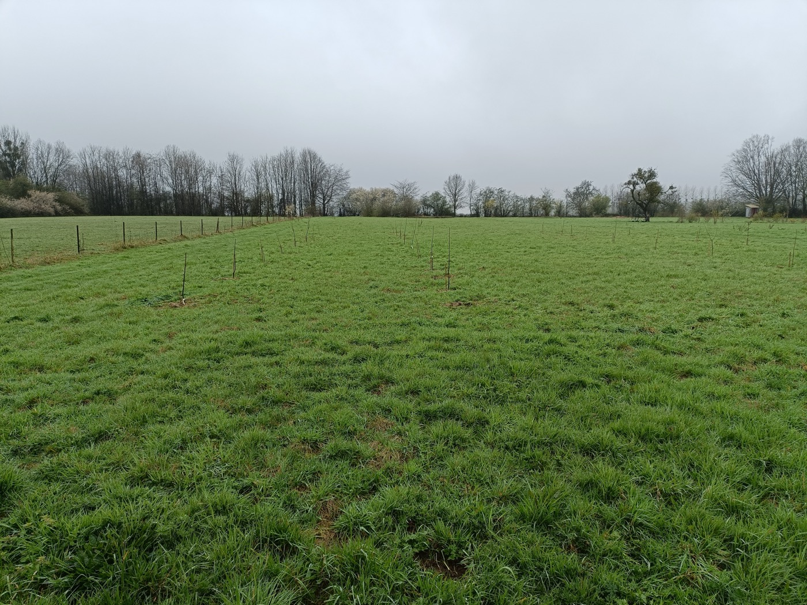

Het begin
Hoe twee amateurs op een balkon een hot pipe bouwden

Antwerpen, winter 2022. Op het eerste verdiep van een appartement, op een balkon waar geen twee mensen tegelijk op pasten, stond een doos met verwarmingskabel, vermiculiet en een rij walnootonderstammen. Geen kas. Geen tunnel. Twee mensen die in de avonden hadden zitten lezen over warm callousing, en die nu het verschil tussen lezen en doen aan het ondervinden waren.
Hoe ik daar terecht kwam
Voor ik op dat balkon stond, had ik een omweg gelopen. Eerst was er een wormbak op een vierde verdieping die ging stinken — mijn broers vonden dat een teken dat ik andere oplossingen moest zoeken. Daarna een volkstuintje. Een paar studies aan de universiteit die geen van alle bleven hangen. Werk in de modewereld. Op een dag vroegen mijn leidinggevenden waar ik naartoe wilde groeien. Ik wil bomen planten, antwoordde mijn buik voor mijn hoofd kon ingrijpen.
Twee jaar later schreef ik me in bij Landwijzer. Het echte begin was op CSA Loof en Bezen, bij Tom en Kaat. Een grote ploeg — Seppe, Ona, Amaryllis, Steffi, Ivo, Marlies, Hugo en vele anderen — die elk jaar groenten, bloemen en fruit teelt. Wat ik daar leerde was niet zozeer een vak als wel een verhouding tot het werk: ernstig, zonder zwaar te worden.
Een eerste ent en een litteken
Tom tipte mij om bij kwekerij De Zoetewei stage te lopen. Daar mocht ik een heel jaar meelopen met Dimitri. Dimitri was geduldig, leerde mij snoeien, en op een dag mocht ik mijn eerste ent maken. Het mes ging mis: drie centimeter de duim in. Het litteken zit er nog. Dimitri leerde mij ook dat walnoot enten extra moeilijk is — een feit dat ik blijkbaar als uitnodiging had opgevat.
Het idee om met warmte te enten
Walnoot ent slecht in koude omstandigheden. Dat is het korte verhaal. Het langere verhaal is dat de plek waar de ent moet samengroeien — het cambium — een vrij specifiek microklimaat nodig heeft om het callusweefsel te vormen dat de twee delen aan elkaar kit. Te koud, en er gebeurt niets. Te nat, en de ent rot. Te droog, en de wond schiet niet dicht. Te warm aan de wortels, en je hebt een boom die wakker wordt voor de ent klaar is.
Het idee van hot pipe enten is daar een chirurgisch antwoord op: warm enkel de entplek. Laat de wortels koud staan zodat ze niet vroegtijdig actief worden. Laat de knoppen koel zodat ze niet uitlopen voor de bovenkant aan de onderkant vastzit. Verwarm uitsluitend die paar centimeter waar je werk doet.
Op papier eenvoudig. In de praktijk een ding van kleine details die je een voor een leert.
Ik had er gesprekken over met Seppe, die ik kende van Loof en Bezen. Hij werd er net zo enthousiast van als ik. Niet veel later hadden we onze eerste elektrisch verwarmde hot pipe in elkaar gezet.
Op zoek naar enthout
Ik had 200 onderstammen besteld. Wat ik niet had, was enthout. Een tijd lang heb ik gemaild en gebeld, totdat ik bij Hugo Vets terecht kwam in Emblem. Hugo is een pitfruitteler — appels, peren, het serieuze werk — die ook walnoten heeft staan. Hij bood iets aan wat ik niet had verwacht: stage lopen, leren snoeien, en mogen snijden uit zijn eigen walnootbomen. Twee vliegen in één klap.
Later, in april 2025, leverde Hugo de variëteiten die de ruggengraat van onze walnootcollectie werden: Coenen, Fernor, Broadview, Komeet, Broca, Lange van Lot, Lara, Plodavski en Prolavski.
Hugo was niet de enige. Ook Dimitri Jacobs en Jos Arits gaven hun eerste enthout gratis weg. Het zijn die gestes — een hand vol takjes, een namiddag uitleg in een snoeischuur — die het experiment mogelijk maakten. Zonder die welwillendheid was het er nooit van gekomen.
Het boek
Een ander stuk gereedschap dat het verschil maakte was The Bench Grafter's Handbook van Brian E. Humphrey. Een dik, technisch boek, geschreven door iemand die jaren professioneel veredeld heeft. Voor wie net begint is het misschien meer dan nodig — voor wie iets serieus wil bouwen is het een ankerpunt. Bij elke twijfel kon ik teruggrijpen op zijn beschrijving van hoe een bepaalde soort zich gedraagt.
Het eerste jaar
Eerlijk: het slagingspercentage viel tegen. Veel enten lieten los. Andere groeiden niet door. We hadden niet door hoe gevoelig walnoot is voor uitdroging en hoe ongenadig een hot pipe wordt als je niet goed afsluit.
Maar geen ramp. Een eerste jaar dat tegenvalt is een eerste jaar dat veel leert. We wisten welke onderdelen onbetrouwbaar waren — de afdichting, de temperatuurmeting, de vochthuishouding — en het volgende jaar werd dat allemaal beter. Mislukken is in dit werk geen einde, eerder een richting.
Van 100 naar 600 m²

In het voorjaar van 2023 mochten we 100 m² gebruiken bij Loof en Bezen om onze proeven uit te planten. Eind van die zomer kwamen Tom, Kaat en Ona vragen of we niet 600 m² wilden gebruiken om te kunnen uitbreiden. Dat voorstel was het eigenlijke startschot van wat De Griffel werd.
Vanaf dat moment werd het echt iets. Een rij appels naast een rij hazelaars naast een rij walnoten. Bamboestokken die we elk jaar opnieuw in de grond zetten. En een hot pipe die met elk seizoen een beetje beter werd dan in dat eerste, koude voorjaar in Antwerpen.
Lees verder over de techniek zelf, of terug naar De Griffel.